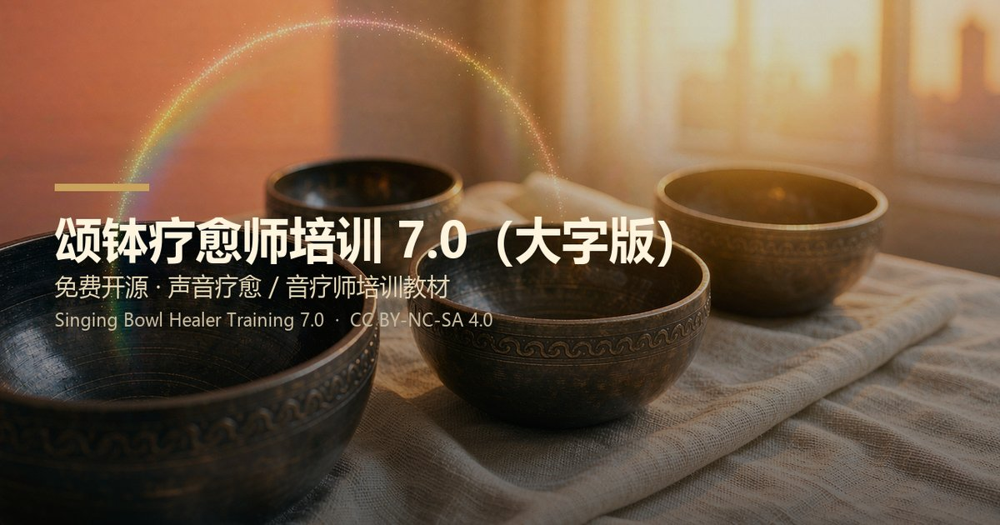

Singing Bowl Healer Training 7.0 (Large-Print Edition)
Free & open-source · Sound Healing / Sound-Therapy Practitioner Training · CC BY-NC-SA 4.0
This site is the English edition of the open-source repository singing-bowl-healer-training. It systematically covers singing-bowl healing, sound healing, and practitioner training.
📘 Read the English Manual 📄 README 📖 中文全文 ⬇️ DownloadWhat's inside
- From instrument to wisdom: Acquaintance → Theory → Practice → Life Wisdom → Natural Therapies.
- Self-check per chapter: Learning Objectives, Chapter Summary, and Reflection Questions.
- Practical toolkit: meditation guidance scripts and standardized self-assessment scales (Athens Insomnia, SAS, SDS, Ayurvedic).
- 250+ illustrations in
docs/media/. - Open collaboration: CC BY-NC-SA 4.0 — see CONTRIBUTING.md.
Keywords
Singing BowlSound HealingSound Therapy Training
Chakra HealingTibetan Singing BowlRelaxation
Sleep & Stress Relief颂钵疗愈声音疗愈
License
This work is licensed under CC BY-NC-SA 4.0 (Attribution–NonCommercial–ShareAlike). ✅ Free to read, download, share, teach; ✅ adapt (same license); ❌ not for commercial use.
⚠️ Disclaimer: content is for learning and training only; it is not medical advice and cannot replace professional care.